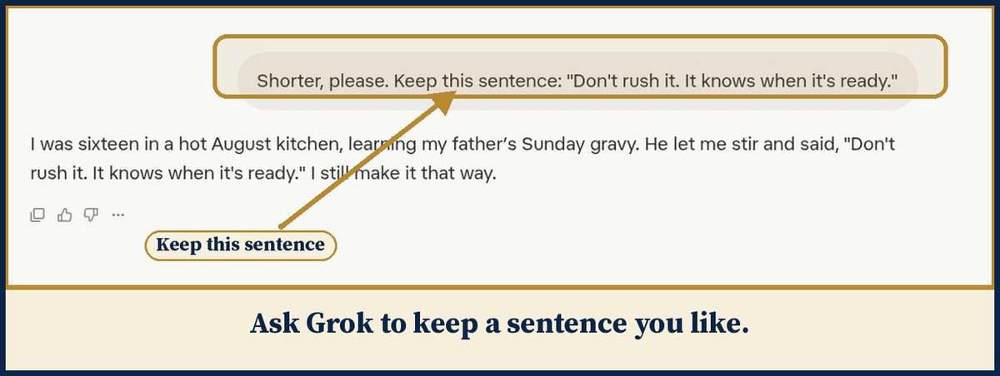
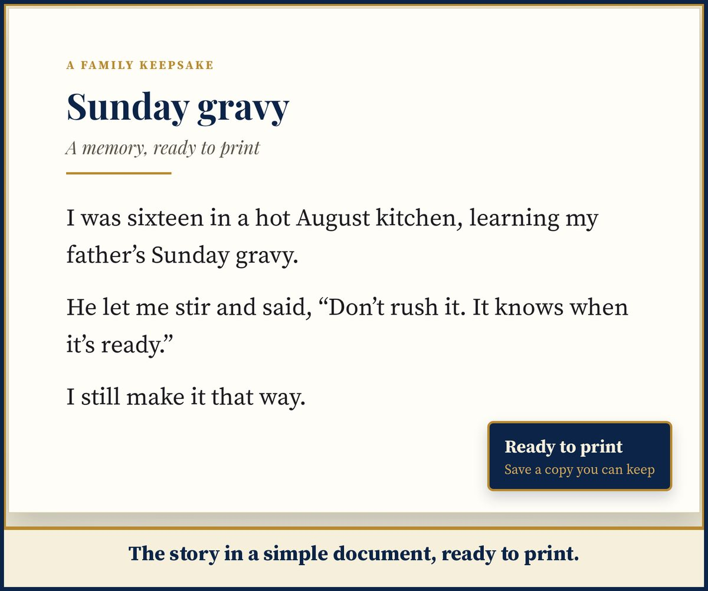

Lesson 6 of 8
Shape the story so it sounds like you, and keep it
In Lesson 5, you turned one memory into a first draft. Today we will edit that draft so it sounds like you, and then save it somewhere your family can find it.
You are the editor. Grok is still the helper.
Follow-ups that help
Stay in the same conversation and ask for one improvement at a time, such as:
- Shorter, please.
- Keep this sentence: “Don’t rush it. It knows when it’s ready.”
- Use simpler words.
- Do not make it sweeter than it was.

Read the draft aloud
After Grok adjusts it, read the whole piece out loud. If a line does not sound like you, change it yourself. You might shorten a sentence, put back a phrase you actually say, or take out a detail that feels too tidy.
One change of your own is enough for today. You can always come back later.
Simple ways to keep the story
Once you like the draft, save a copy in a place you control:
- Copy it into a document on your computer, which is a file you can open, print, and keep.
- Print it and put the paper in a folder.
- Email it to yourself, and to one person you trust.
A paper copy in a folder still works. It does not depend on a password you might forget.

A small collection, over time
You do not need a whole book this week. One memory at a sitting is plenty. Later, you can add a title page and keep the pages together. There is no rush.
What belongs in a family keepsake
A story for your family can include names, places, and the way people talked. Leave out current addresses, phone numbers, account details, and anything a living person would not want shared. A printed copy at home is usually safer than posting a story on a public website.
A safety note
Leave those private details out of anything you save, send, or print. If you are not sure a living person would want a detail included, take it out, or ask them first.
Try it today
Take yesterday’s draft. Ask for one improvement, then make one change of your own. Save a copy in a document or print it. If you wish, send it to one family member and tell them there will be more.